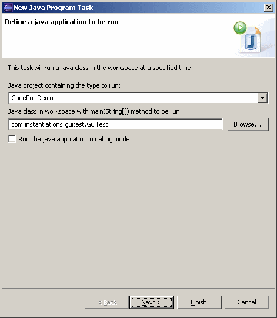

Schedule Java Program To schedule a java program to be run at a specified time, open the scheduler view, right click to access the popup menu, select the "New" submenu, and then select "Java Program". This opens the scheduler wizard so that the name of a java class can be specified. Click the "Browse" button to open a class chooser dialog to easily select an existing java class. If you first select a project, that project will determine which classes are available to run. Click the "Next >" button to schedule when the message is to be displayed. |